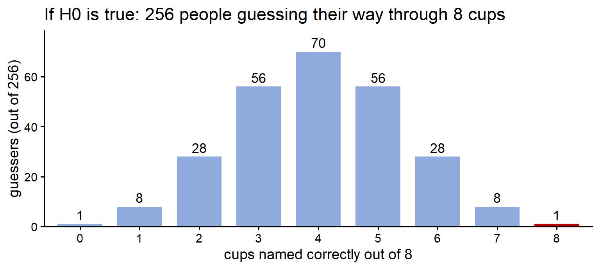
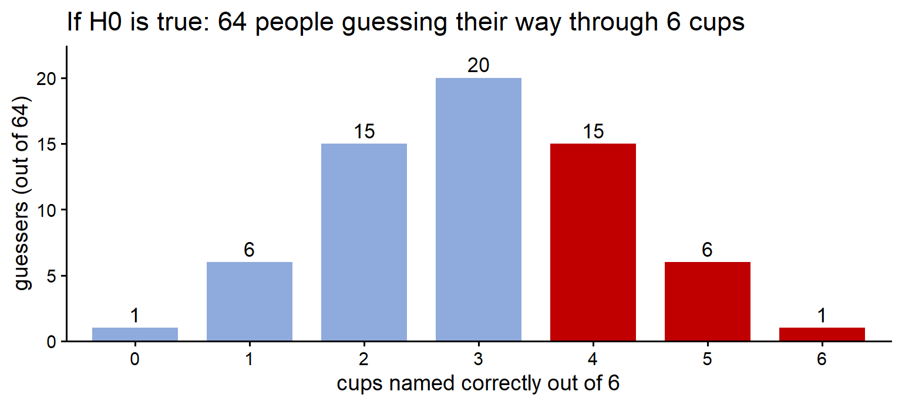
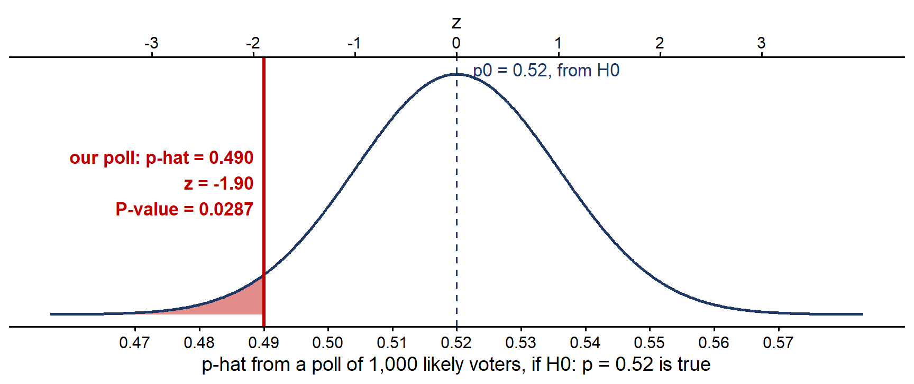
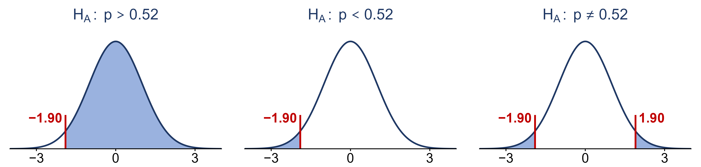
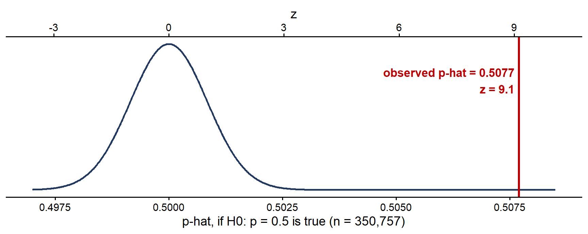
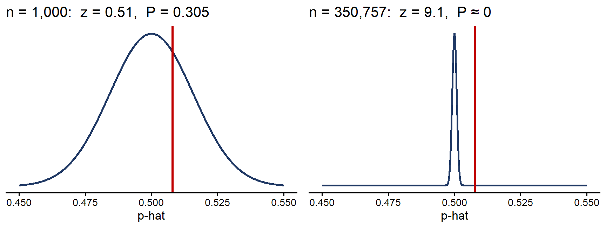

For the last two weeks we have been estimating parameters: a confidence interval answers the question “what is \(p\) (or \(\mu\)), give or take?” A lot of questions are not asked that way. They come as a claim, and we want to know whether the data back it up:
Each claim is about a parameter: the drug’s average effect \(\mu\), the candidate’s support \(p\), your roommate’s chance \(p\) of naming a cup correctly. We never see the parameter. We see an estimate from a sample, and estimates bounce around from sample to sample (Week 8: two polls of the same state give two different answers). So the real question is always:
Is the difference between what we saw and what the claim says too big to be ordinary sampling variation?
A significance test (also called a hypothesis test) is the tool that answers it. A result that is decidedly not due to ordinary variation, that is, not due to chance or coincidence, is called statistically significant.
A significance test works like a criminal trial.
Hold on to that picture. Everything below is the same four ideas with numbers attached.
Your roommate claims they can tell Coke from Pepsi. You set up a blind test: 8 times, you flip a coin to decide which soda to pour, and they taste the cup and name it. They get all 8 right. Impressive, or lucky?
The parameter is \(p\), your roommate’s true, long-run chance of naming a cup correctly. We cannot see \(p\); we only see this one test, where they got \(\hat{p} = 8/8 = 1\). There are two stories about \(p\):
Notice that the hypotheses are about \(p\), the parameter, not about \(\hat{p}\). We already know \(\hat{p} = 1\); there is nothing to test about it. The question is what it tells us about \(p\).
Here is the key move. We cannot prove story 2 directly, so we assume story 1 and work out what it predicts. If they are only guessing, then the number of cups they get right, \(X\), is a count of successes in 8 independent trials that each succeed with probability 0.5. That is a binomial random variable from Week 7: \[X \sim \text{Binom}(8,\ 0.5) \qquad\text{when } H_0 \text{ is true}\]
A helpful way to see this distribution: imagine 256 people who cannot taste the difference each take the 8-cup test, guessing every time. Since \(2^8 = 256\), the binomial formula \(P(X = k) = \binom{8}{k}(0.5)^k(0.5)^{8-k} = \binom{8}{k}/256\) says that, on average, exactly \(\binom{8}{k}\) of them score \(k\):

This is what “just guessing” looks like. Most guessers land near 4 out of 8, which makes sense: the mean of a binomial is \(np = 8(0.5) = 4\). Some get 5 or 6 by luck. Getting all 8 happens to about 1 guesser in 256.
Now compare the data with the prediction. The probability, if \(H_0\) is true, of a result at least as extreme as the one we saw is called the P-value. “At least as extreme” means at least as far in the direction \(H_A\) points to, which here is “as many correct, or more”: \[\text{P-value} = P(X \geq 8 \mid H_0 \text{ true}) = \binom{8}{8}(0.5)^8 = \frac{1}{256} \approx 0.0039\] The bar \(\mid\) is read “given”: the probability is worked out in the world where \(H_0\) is true. That is the same conditional probability idea from Week 6.
A P-value of 0.0039 says: if your roommate were only guessing, a result this good would happen less than half a percent of the time.
There are only two ways to explain a result with a small P-value:
Both are possible. The test does not tell us which one is true. It tells us how hard we would have to believe in luck to keep believing \(H_0\). The smaller the P-value, the harder that gets, and at some point explanation 2 becomes the more reasonable one.
Where is that point? It is a choice, made before looking at the data, called the significance level \(\alpha\). By convention \(\alpha = 0.05\), i.e. “if a result this extreme would happen less than 5% of the time by luck alone, we stop believing it was luck”. The decision rule is:
Here \(0.0039 < 0.05\), so we reject \(H_0\): the data are evidence that your roommate can taste the difference. The textbook’s memory device: “if the P-value is low, the null must go.”
A friend makes the same claim, but takes a shorter 6-cup test and gets 4 of 6 right. Under \(H_0: p = 0.5\), their score is \(X \sim \text{Binom}(6,\ 0.5)\). Picture 64 guessers (\(2^6 = 64\)):

“At least as extreme” as 4 correct means 4, 5 or 6 correct, the shaded bars: \[\text{P-value} = P(X \geq 4 \mid H_0 \text{ true}) = \frac{15 + 6 + 1}{64} = \frac{22}{64} \approx 0.34\] About a third of pure guessers do this well, so 4 of 6 is not surprising at all if your friend is guessing. \(0.34 \geq 0.05\): do not reject \(H_0\). This does not prove your friend is guessing (“not guilty”, not “innocent”). It says this test gives no real evidence that they can taste the difference. A longer test might.
One more thought. If all 256 guessers from the first picture took the 8-cup test, about one of them would score 8 for 8 and be convinced they have a gift. A small P-value means either rare luck or a false \(H_0\), and from one test we cannot be sure which. That is why surprising results get repeated before anyone believes them.
Significance tests bring a lot of new symbols. Most of them are old ideas with new names.
| Symbol | Read as | Meaning |
|---|---|---|
| \(\theta\) | “theta” | a parameter, any parameter: stands for \(p\) or \(\mu\) when we talk about tests in general |
| \(\theta_0\), e.g. \(p_0\), \(\mu_0\) | “theta-naught”, “p-naught”, “mu-naught” | the value of the parameter that \(H_0\) claims, a number like 0.5 or 28 g |
| \(\hat{\theta}\), e.g. \(\hat{p}\), \(\bar{x}\) | “theta-hat”, “p-hat”, “x-bar” | the estimate of \(\theta\) from our sample (Weeks 1 and 8) |
| \(H_0: \theta = \theta_0\) | “H-naught: theta equals theta-naught” | the null hypothesis: “no effect”, the parameter equals the claimed value |
| \(H_A: \theta > \theta_0\) | “H-A: theta is greater than theta-naught” | an upper-tailed alternative: we suspect the parameter is bigger |
| \(H_A: \theta < \theta_0\) | “H-A: theta is less than theta-naught” | a lower-tailed alternative: we suspect the parameter is smaller |
| \(H_A: \theta \neq \theta_0\) | “H-A: theta is not equal to theta-naught” | a two-sided alternative: we suspect it is different, in either direction |
| \(z_{obs}\) | “z observed” | the test statistic: how many standard errors \(\hat{\theta}\) is from \(\theta_0\) |
| \(P(Z \geq z_{obs} \mid H_0 \text{ true})\) | “the probability Z is at least z observed, given H-naught is true” | the P-value of an upper-tailed test |
| \(\alpha\) | “alpha” | the significance level, the cutoff for the P-value, usually 0.05 |
The subscript 0 always marks “the value from the null hypothesis”. In the taste test, \(\theta\) is \(p\), \(\theta_0 = p_0 = 0.5\), and \(\hat{\theta} = \hat{p}\).
Hypotheses come first, before any data are looked at. A good order to write them in:
Rules that always hold:
The direction of \(H_A\) decides which kind of test it is:
| Alternative | Name | Use it when the question says |
|---|---|---|
| \(H_A: \theta > \theta_0\) | upper-tailed (one-sided) | “more than”, “better”, “increased”, “at least” |
| \(H_A: \theta < \theta_0\) | lower-tailed (one-sided) | “less than”, “worse”, “decreased”, “fewer” |
| \(H_A: \theta \neq \theta_0\) | two-sided | “different”, “changed”, “is it fair?” |
Your roommate names Coke or Pepsi. Do they do better than guessing? \(p\) = their chance of naming a cup right. \(H_A: p > 0.5\), \(H_0: p = 0.5\), with \(p_0 = 0.5\): upper-tailed.
A coin is spun on a table. Does it favor heads or tails? \(p\) = the chance of heads. We do not suspect a direction, only “not fair”: \(H_A: p \neq 0.5\), \(H_0: p = 0.5\), with \(p_0 = 0.5\): two-sided.
A chip bag says 28 g. Do the bags hold less than that on average? \(\mu\) = the mean weight of all bags. \(H_A: \mu < 28\), \(H_0: \mu = 28\), with \(\mu_0 = 28\) g: lower-tailed.
For the taste test we could list every possible score and add up the binomial probabilities. With hundreds or thousands of observations that gets impractical, but we already have a better tool: the sampling distribution and the central limit theorem from Week 8.
Recall what the CLT told us about \(\hat{p}\): over all possible samples of size \(n\), the values of \(\hat{p}\) pile up in a roughly normal shape, centered at the true \(p\), with standard error \(SE = \sqrt{p(1-p)/n}\). In a significance test we assume \(H_0\) is true, so the true \(p\) is \(p_0\). That pins down the whole pile: \[\text{if } H_0 \text{ is true:}\qquad \hat{p} \;\approx\; N\!\left(p_0,\ \sqrt{\frac{p_0(1-p_0)}{n}}\right)\] Notice where every number comes from. The center \(p_0\) comes from \(H_0\), not from the data. The standard error also uses \(p_0\), because we are describing the world where \(H_0\) is true. The data enter only once, as the single \(\hat{p}\) we observed, which we then place on that curve.
To see how far out on the curve it lands, we turn it into a \(z\)-score, exactly as in Weeks 6 and 9 (observation minus mean, divided by standard deviation). This \(z\)-score is the test statistic: \[z_{obs} = \frac{\hat{\theta} - \theta_0}{SE} \qquad\text{for a proportion:}\qquad z_{obs} = \frac{\hat{p} - p_0}{\sqrt{p_0(1 - p_0)/n}}\] It measures how many standard errors the estimate is from the value \(H_0\) claims. If \(H_0\) is true, \(z_{obs}\) comes from the standard normal \(N(0, 1)\), so values near 0 are ordinary and values beyond about \(\pm 2\) are rare. The P-value is then an area under the standard normal curve, found with the \(z\)-table just as in Week 9.
This is the same machinery as a confidence interval, pointed in a different direction:
| Confidence interval | Significance test | |
|---|---|---|
| Question | What is the parameter, give or take? | Is the claim \(\theta = \theta_0\) believable? |
| Normal curve centered at | the estimate \(\hat{\theta}\) | the claimed value \(\theta_0\) |
| Uses | \(\hat{\theta} \pm z \times SE\) | \(z_{obs} = (\hat{\theta} - \theta_0)/SE\) |
| Result | a range of believable values for \(\theta\) | a P-value, then reject or do not reject \(H_0\) |
It is midterm season (Election Day is Tuesday, November 3). Suppose the polling averages put Candidate X in a Senate race at 52% support among likely voters. Your campaign suspects X’s support is actually lower. You run your own poll of a random sample of \(n = 1{,}000\) likely voters, and 490 say they will vote for X: \(\hat{p} = 0.490\).
49% is lower than 52%. But Week 8 taught us that two polls of the same state give different answers just because they reach different people. Is a 3-point gap bigger than ordinary poll-to-poll variation? That is exactly a significance test.
Here is the same reasoning as a picture. The curve shows where \(\hat{p}\) from a poll of 1,000 voters would land if \(H_0\) were true; the red line is where ours landed, and the shaded area is the P-value.

Read the two axes together: the top axis is in the units of the problem (proportions of voters), the bottom axis is the same picture in standard errors. The test statistic is just the poll’s position on the bottom axis.
A different claim, the same poll. The headline question on election night is whether X is losing, i.e. below 50%. That is a different \(H_0\): \(H_0: p = 0.5\), \(H_A: p < 0.5\). Now \(SE = \sqrt{0.25/1000} \approx 0.0158\) and \(z_{obs} = (0.490 - 0.5)/0.0158 \approx -0.63\), so the P-value is \(P(Z \leq -0.63) = 0.2643\). Do not reject \(H_0\). The same 49% that is good evidence against “52%” is weak evidence against “50%”, because 0.490 sits only 0.63 standard errors below 0.5. A test always answers a question about one specific value \(\theta_0\): change \(\theta_0\) and you change the question. This is why poll reports say a race is “within the margin of error”.
“At least as extreme” always means “at least as far in the direction \(H_A\) points to”. So the shape of \(H_A\) decides which area of the curve is the P-value. To see how much it matters, take our poll (\(z_{obs} = -1.90\) against \(p_0 = 0.52\)) and work out the P-value for all three alternatives:

At \(\alpha = 0.05\), only the lower-tailed test rejects \(H_0\). The two-sided test, with the same data, does not (0.0574): it spreads its doubt over both directions, so it needs a little more evidence. This is why \(H_A\) has to come from the question before the poll is run. Choosing the tail after seeing which way the poll went would make any result look more convincing than it is.
A physics model of coin tossing (Diaconis, Holmes and Montgomery, 2007) predicts that a flipped coin lands on the same side it started on a little more than half the time, about 51%, because a real flip wobbles. Bartoš et al. (2025) tested it: 48 people flipped coins 350,757 times, recording the side facing up before and after every flip (and filming it).
| Who flipped | Flips |
|---|---|
| students, for a thesis project | 75,036 |
| coin-flipping marathons (up to 12 hours) | 203,440 |
| volunteers recruited online | 72,281 |
| total | 350,757 |
\(X\) = 1 if a flip lands on the side it started on, and 0 otherwise. In all, 178,079 of the \(n = 350{,}757\) flips did. Test the model’s prediction at \(\alpha = 0.05\), using the five steps.
Here is what step 3 looks like on the sampling distribution. The curve is where \(\hat{p}\) would land if \(H_0\) were true; the red line is where it actually landed.

A 50.8% same-side rate instead of 50% is about 1 extra same-side landing in every 130 flips. Nobody could notice that in a coin toss before a football game. So how can it be “significant”?
Because significance depends on the sample size. The standard error has \(\sqrt{n}\) on the bottom, so with 350,757 flips the curve of believable \(\hat{p}\) values is extremely narrow, and even a tiny difference lands far out in the tail. Suppose instead only 1,000 flips had been made, with the same 50.8% (508 same-side). Then \(SE = \sqrt{0.25/1000} \approx 0.0158\), \(z_{obs} = (0.508 - 0.5)/0.0158 \approx 0.51\), and the P-value is \(1 - 0.6950 = 0.3050\): not significant.

Same estimate, opposite conclusions. “Statistically significant” means “probably not chance”. It does not mean “big” or “important”. Whether a difference matters is a question about the context, and a confidence interval (which shows how big the effect is) answers it better than a P-value does.
Every test in the rest of the course follows the same five steps:
On Wednesday we use these steps to test claims about a population proportion \(p\), and on Friday about a population mean \(\mu\).
A friend claims they can predict coin flips. In a test of 10 flips, they call 7 correctly. Write the hypotheses and find the P-value. Is the result significant at \(\alpha = 0.05\)? Answer: \(H_A: p > 0.5\), \(H_0: p = 0.5\) (upper-tailed). Under \(H_0\), \(X \sim \text{Binom}(10, 0.5)\), so P-value \(= P(X \geq 7 \mid H_0 \text{ true}) = (120 + 45 + 10 + 1)/1024 = 176/1024 \approx 0.172\). \(0.172 \geq 0.05\): do not reject \(H_0\). Seven of ten is quite common for a guesser.
Write \(H_0\) and \(H_A\), give \(\theta_0\), and name the type of test.
A test statistic comes out to \(z_{obs} = -2.10\). Find the P-value if \(H_A\) is lower-tailed, and if it is two-sided. What is the decision for each at \(\alpha = 0.05\)? At \(\alpha = 0.01\)? Answer: lower-tailed: \(P(Z \leq -2.10) = 0.0179\); two-sided: \(2 \times 0.0179 = 0.0358\). Both are below 0.05, so reject \(H_0\) either way at \(\alpha = 0.05\). Neither is below 0.01, so do not reject \(H_0\) at \(\alpha = 0.01\).